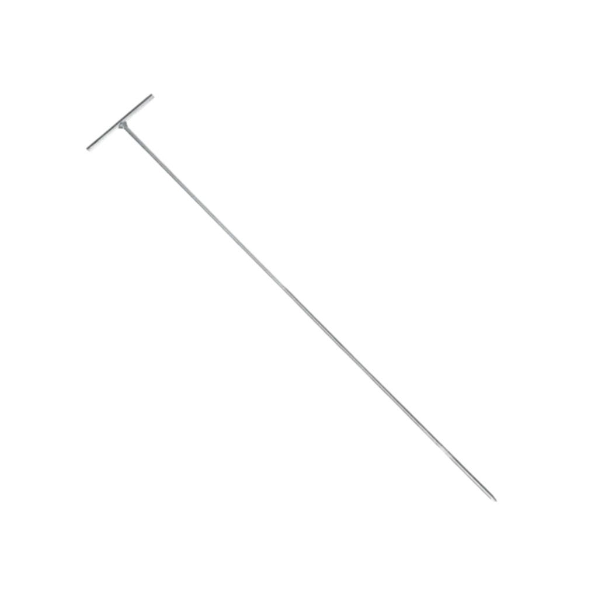
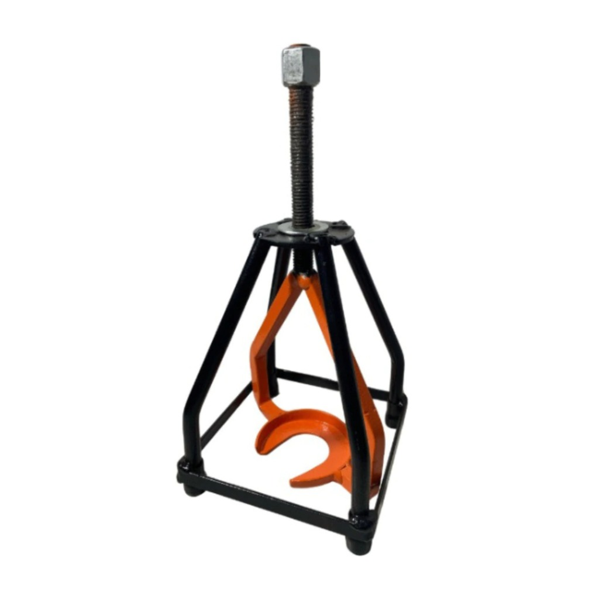
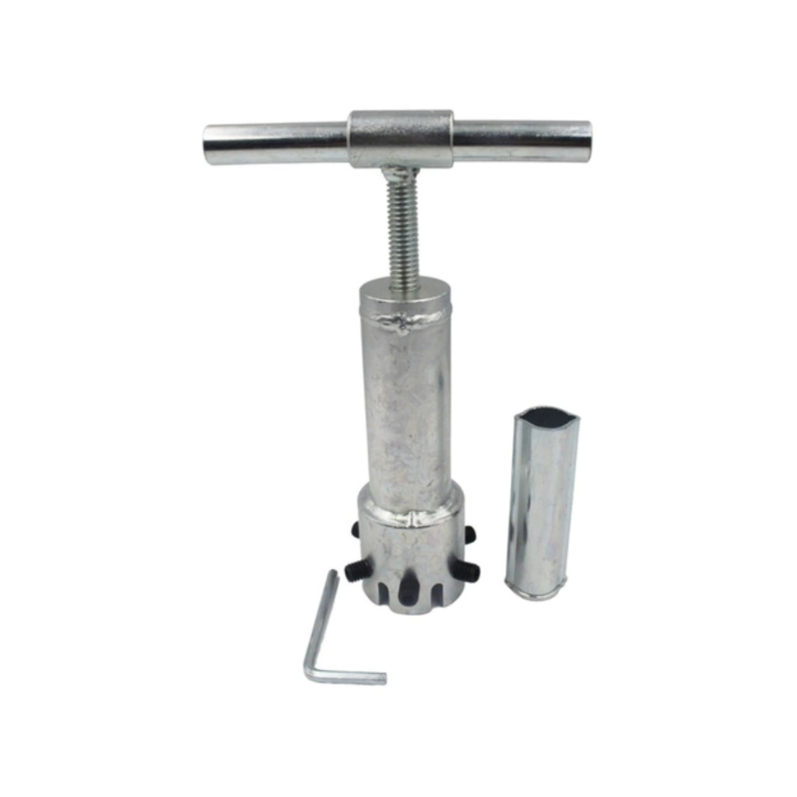

Chave T
A sua principal função é afrouxar ou desatarraxar os parafusos. Para isso, você vai precisar encaixar a ponta da Chave T Phillips na cabeça do parafuso, girar no sentido horário caso queira prendê-lo, e no sentido anti-horário para soltá-lo.

Saca Mecanismo
A Saca Mecanismo Câmbio para Lavadora é uma ferramenta utilizada para facilitar a manutenção no trabalho de desmontagem do câmbio da Lavadora. Sua principal função é auxiliar na extração do câmbio, oferecendo maior praticidade no manuseio.

Saca Cesto
O Saca Cesto para Lavadora é uma ferramenta utilizada para facilitar a manutenção no trabalho de desmontagem do cesto da lavadora. Sua principal função é auxiliar a extração do cesto facilitando o trabalho do operador.